Análise e Visualização de Dados (AVD) — 2026.2 · Avaliação II (AV2)
Parte Comum: K-Means no dataset Obesity (UCI 544)
Parte Específica: Por que os hóspedes cancelam? — Hotel Booking Demand
Integrantes
Pedro de Melo Dhalia
Matheos de Oliveira Guerra
Miguel José França de Andrade
24/11/2026
Este relatório documenta as duas partes do Projeto Final. Na Parte Comum, exploramos o dataset Obesity, padronizamos as variáveis e aplicamos o K-Means em duas passadas (k escolhido pelo Método do Cotovelo e k igual ao número real de classes), avaliando os grupos por matrizes de confusão. Na Parte Específica, investigamos o cancelamento de reservas em dois hotéis portugueses, construímos uma história explanatória para a gestão do hotel e um dashboard interativo em Streamlit.
Todo o código é reprodutível: os scripts de src/ geram as figuras e tabelas de out/ usadas neste
relatório, e o dashboard usa as mesmas funções (os números batem). Bibliotecas: pandas, numpy, matplotlib, seaborn, plotly,
scikit-learn e streamlit, em Python 3.12.
| Caminho | Conteúdo |
|---|---|
notebooks/parte_comum/eda.ipynb, kmeans_metricas.ipynb | Parte Comum executada, com saídas e comentários |
src/parte_comum/eda.py · kmeans.py · metricas.py | Mesmas análises pela linha de comando (--dataset obesity --modo livre|fixo) |
src/parte_especifica/eda.py | EDA, figuras estáticas e modelo da Parte Específica |
src/parte_especifica/dashboard.py + app_pages/ | Dashboard Streamlit (7 páginas, inclui a Parte Comum) |
out/parte_comum/, out/parte_especifica/ | Figuras (PNG) e tabelas (CSV/JSON) geradas |
data/ | Datasets e baixar_dados.py |
O dataset Estimation of obesity levels based on eating habits and physical condition (UCI 544; Palechor & de la Hoz
Manotas, 2019) tem 2.111 pessoas do México, Peru e Colômbia e 17 colunas: 16 atributos e a classe
NObeyesdad com 7 níveis. Segundo os autores, 77% das linhas foram geradas sinteticamente com SMOTE e só 23%
vêm do questionário web — fato que reaparece em toda a análise.
| Coluna | Descrição | Tipo | Únicos | Faltantes |
|---|---|---|---|---|
| Gender | Gênero | Qualitativa nominal (binária) | 2 | 0 |
| Age | Idade (anos) | Quantitativa contínua | 1402 | 0 |
| Height | Altura (m) | Quantitativa contínua | 1574 | 0 |
| Weight | Peso (kg) | Quantitativa contínua | 1525 | 0 |
| family_history_with_overweight | Histórico familiar de sobrepeso | Qualitativa nominal (binária) | 2 | 0 |
| FAVC | Come alimentos calóricos com frequência | Qualitativa nominal (binária) | 2 | 0 |
| FCVC | Frequência de consumo de vegetais (1=nunca, 2=às vezes, 3=sempre) | Quantitativa ordinal (escala 1–3) | 810 | 0 |
| NCP | Número de refeições principais por dia (1 a 4) | Quantitativa ordinal (escala 1–4) | 635 | 0 |
| CAEC | Come entre as refeições | Qualitativa ordinal (no < Sometimes < Frequently < Always) | 4 | 0 |
| SMOKE | Fuma | Qualitativa nominal (binária) | 2 | 0 |
| CH2O | Água por dia (1=<1L, 2=1–2L, 3=>2L) | Quantitativa ordinal (escala 1–3) | 1268 | 0 |
| SCC | Monitora as calorias que consome | Qualitativa nominal (binária) | 2 | 0 |
| FAF | Frequência de atividade física (0=nenhuma ... 3=4–5 dias/semana) | Quantitativa ordinal (escala 0–3) | 1190 | 0 |
| TUE | Tempo usando dispositivos eletrônicos (0=0–2h, 1=3–5h, 2=>5h) | Quantitativa ordinal (escala 0–2) | 1129 | 0 |
| CALC | Consumo de álcool | Qualitativa ordinal (no < Sometimes < Frequently < Always) | 4 | 0 |
| MTRANS | Meio de transporte habitual | Qualitativa nominal (5 categorias) | 5 | 0 |
| NObeyesdad | Nível de obesidade (CLASSE) | Qualitativa ordinal (7 classes) | 7 | 0 |
São 8 variáveis numéricas (3 contínuas e 5 escalas de questionário), 5 binárias, 2 ordinais de frequência, 1 nominal (MTRANS) e a classe, que é ordinal (ordenada pelo IMC). Não há valores ausentes. Encontramos duas questões de qualidade:
| Etapa | Linhas | Diagnóstico | Tratamento |
|---|---|---|---|
| Duplicatas | 24 | 24 linhas idênticas a outra em todas as 17 colunas, todas na parte coletada pelo questionário web (valores inteiros). Coincidir em 17 respostas é improvável: o mais provável é a mesma pessoa ter enviado o formulário mais de uma vez. | Removidas (1,1% da base). Cópias dariam peso dobrado a esses pontos no cálculo dos centróides. |
| Inconsistência (dados sintéticos) | 1580 | FCVC, NCP, CH2O, FAF e TUE são respostas de questionário em escala inteira, mas aparecem com decimais (ex.: FCVC = 2,45) em ~60% das linhas — efeito da interpolação do SMOTE. | Arredondadas para o inteiro mais próximo, restaurando o significado da escala. |
| Faltantes | 0 | Nenhum valor ausente em nenhuma coluna. | Nenhum tratamento necessário. |
| Outliers | 0 | Regra de Tukey: 167 idades acima de ~35 anos, 1 altura (1,98 m) e 1 peso (173 kg). Todos são plausíveis (idade 14–61, altura 1,45–1,98 m, peso 39–173 kg). NCP e CH2O também 'acusam' centenas de outliers, mas só porque o IQR deles é 0 (escala discreta concentrada em um valor): a regra de Tukey não se aplica bem a escalas de 3–4 pontos. | Mantidos: são pessoas reais/plausíveis e as classes extremas (Obesidade III, Abaixo do peso) dependem justamente desses valores. A padronização reduz seu efeito de escala. |
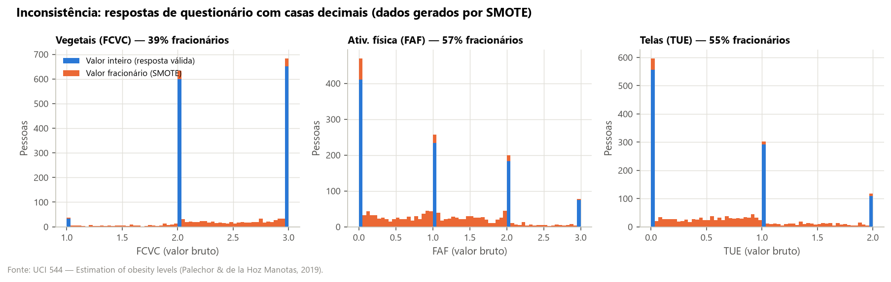
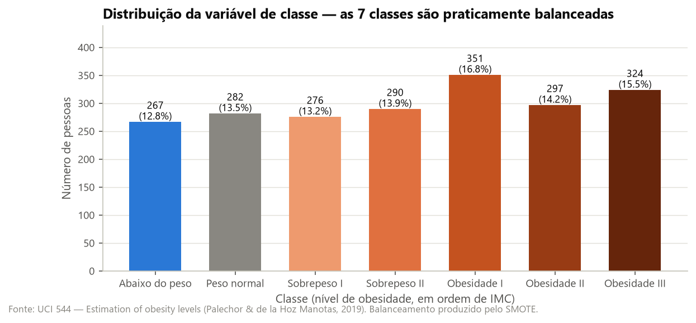
As classes estão quase balanceadas — algo improvável em dados reais de obesidade. Consequência: "chutar" sempre a classe mais comum acerta só 16,8%, a linha de base para julgar o K-Means.
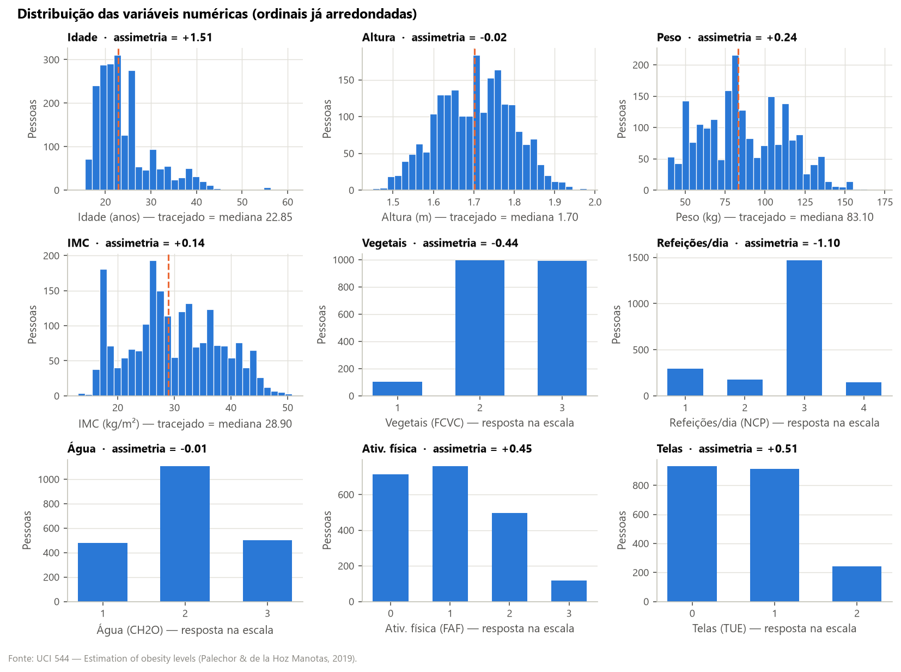
Idade é fortemente assimétrica à direita (mediana 22,8 anos; assimetria +1,5): a amostra é jovem. Altura é aproximadamente simétrica; peso e IMC são espalhados de forma quase uniforme (13 a 51 kg/m²), de novo pelo balanceamento artificial. Nas escalas, 70% fazem 3 refeições, 53% bebem 1–2 L de água, 70% fazem pouca ou nenhuma atividade física (FAF 0–1).
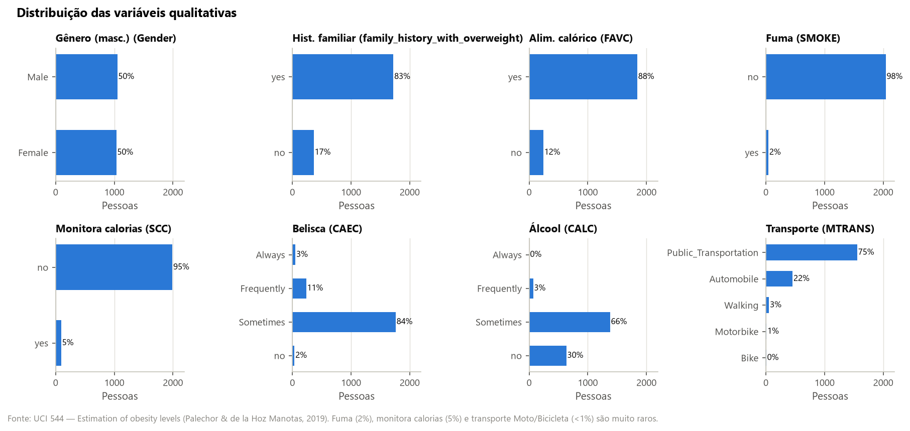
Gênero é equilibrado (50% masculino); 82% têm histórico familiar de sobrepeso e 88% consomem alimentos calóricos com frequência. Fumar (2%), monitorar calorias (5%) e moto/bicicleta (< 1%) são muito raros — o que terá efeito no K-Means.
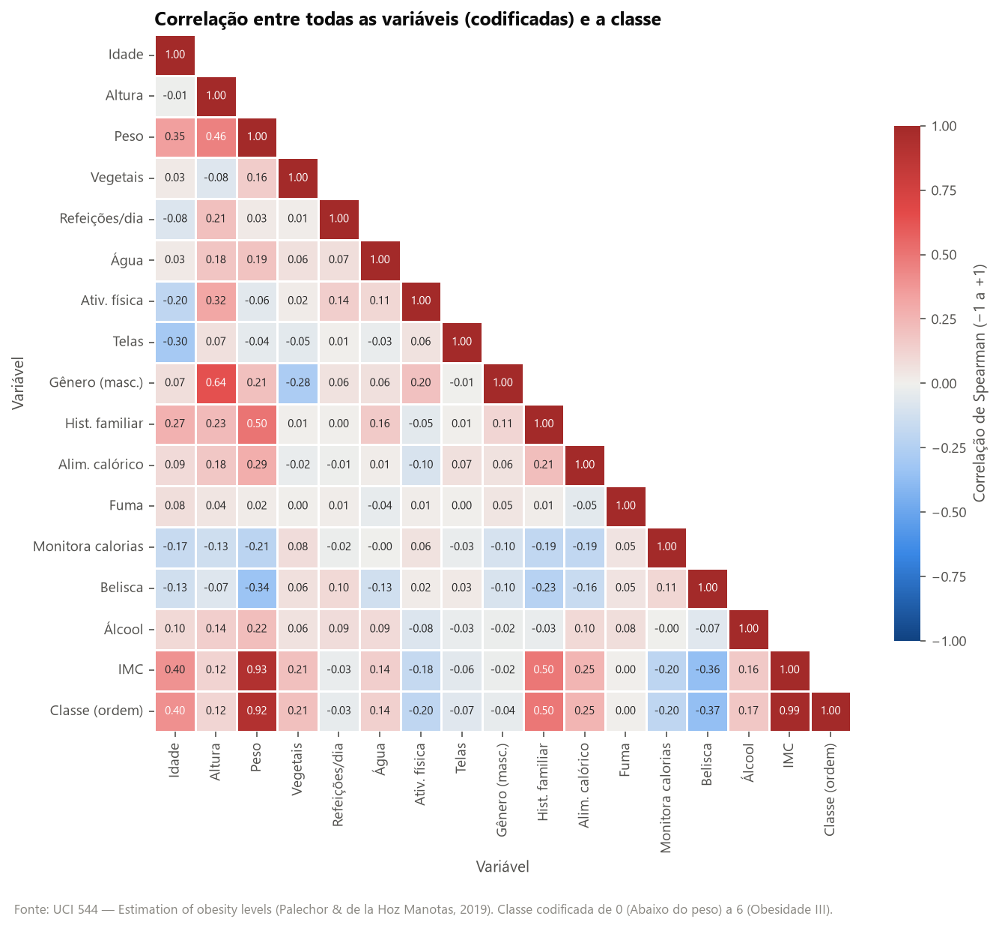
Usamos Spearman porque metade das variáveis é ordinal. A classe é quase uma função do IMC (ρ = 0,99) e do peso (ρ = 0,92): os níveis de obesidade são definidos por faixas de IMC. Entre os hábitos, as associações com a classe são moderadas ou fracas: histórico familiar 0,50; idade 0,40; beliscar entre refeições −0,37; alimentos calóricos 0,25; vegetais 0,21; atividade física −0,20.
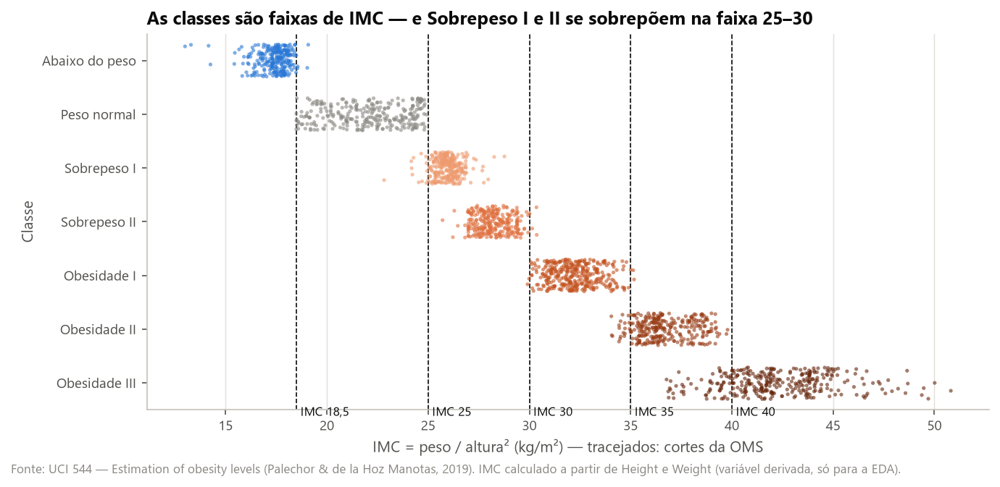
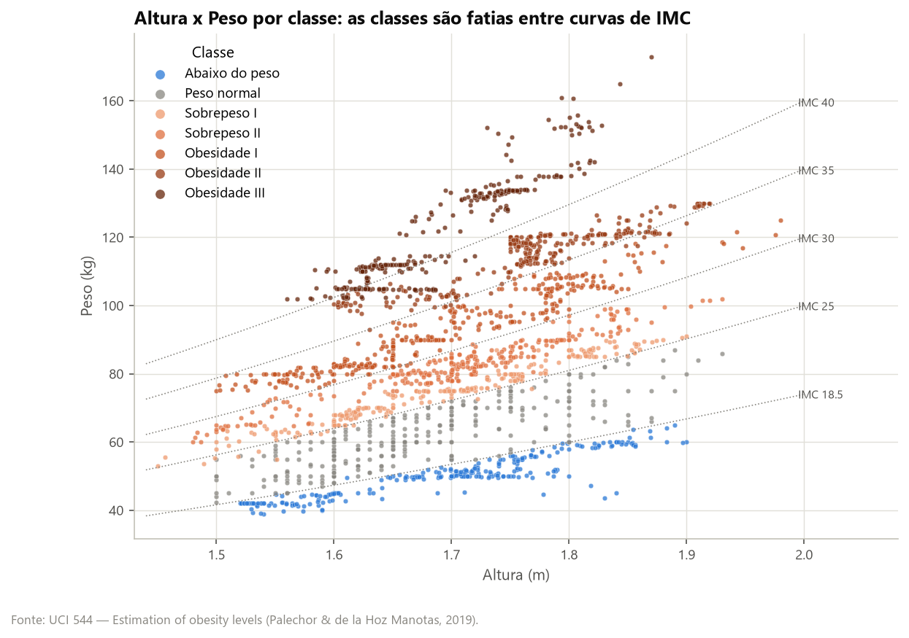
Sobrepeso I (IMC 22,8–28,8) e Sobrepeso II (25,7–30,4) se sobrepõem — e a própria OMS não divide sobrepeso em dois níveis. Obesidade II e III também se tocam (34–39,8 vs. 36,8–50,8).
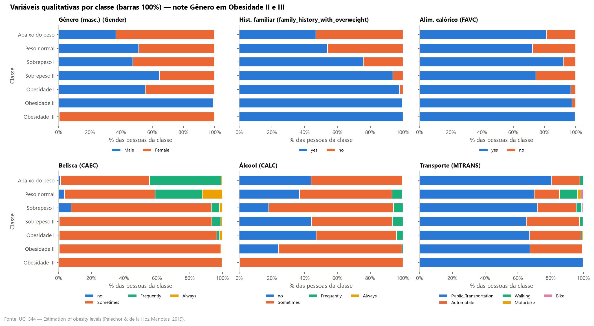
Artefato do SMOTE: Obesidade II tem 295 homens e 2 mulheres; Obesidade III tem 323 mulheres e 1 homem, e 323 das 324 pessoas dessa classe têm exatamente os mesmos valores de álcool, beliscar e transporte. O SMOTE criou essas classes a partir de poucos casos reais, copiando seus atributos — o que as torna artificialmente homogêneas.
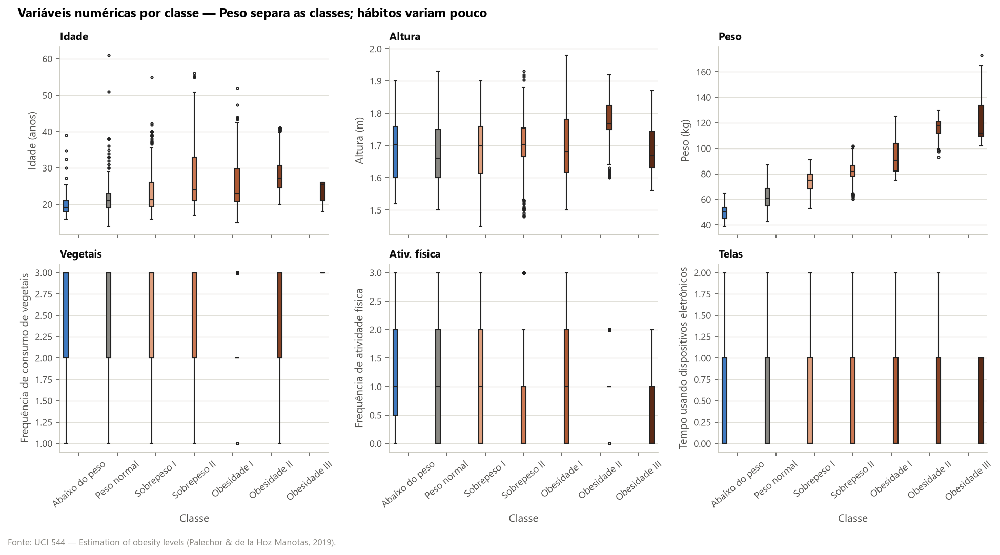
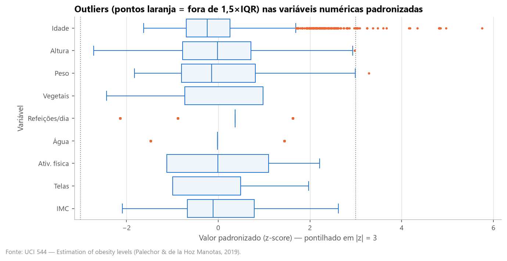
| Variável | q1 | q3 | Lim. inf. | Lim. sup. | Fora de 1,5×IQR | |z| > 3 | min | max |
|---|---|---|---|---|---|---|---|---|
| Age | 19,92 | 26,00 | 10,79 | 35,13 | 167 | 23 | 14,00 | 61,00 |
| Height | 1,63 | 1,77 | 1,42 | 1,98 | 1 | 0 | 1,45 | 1,98 |
| Weight | 66,00 | 108,02 | 2,98 | 171,04 | 1 | 1 | 39,00 | 173,00 |
| FCVC | 2,00 | 3,00 | 0,50 | 4,50 | 0 | 0 | 1,00 | 3,00 |
| NCP | 3,00 | 3,00 | 3,00 | 3,00 | 621 | 0 | 1,00 | 4,00 |
| CH2O | 2,00 | 2,00 | 2,00 | 2,00 | 980 | 0 | 1,00 | 3,00 |
| FAF | 0,00 | 2,00 | -3,00 | 5,00 | 0 | 0 | 0,00 | 3,00 |
| TUE | 0,00 | 1,00 | -1,50 | 2,50 | 0 | 0 | 0,00 | 2,00 |
| IMC | 24,37 | 36,10 | 6,78 | 53,69 | 0 | 0 | 13,00 | 50,81 |
Decisão: nenhum outlier removido. As 167 idades acima de ~35 anos, a altura de 1,98 m e o peso de 173 kg são plausíveis e definem justamente as classes extremas. NCP e CH2O "acusam" centenas de outliers só porque o IQR deles é zero (escala de 3–4 pontos concentrada em um valor) — a regra de Tukey não se aplica bem a elas. A padronização controla o efeito de escala.
Variáveis usadas (15): as 8 numéricas, as 5 binárias codificadas como 0/1 e as 2 ordinais de frequência (CAEC e CALC) codificadas de 0 (no) a 3 (Always), preservando a ordem. MTRANS foi excluída: é nominal sem ordem (virar 0–4 inventaria distâncias falsas) e o one-hot transformaria uma única variável em 5 dimensões, dando a ela ~5× o peso das demais. A classe, obviamente, não entra.
Por que padronizar? O K-Means atribui cada ponto ao centróide mais próximo pela distância euclidiana. Sem
padronização, cada variável pesa proporcionalmente à sua escala: o peso tem variância ≈ 686 kg², a altura ≈ 0,009 m² e as escalas
de questionário ≈ 0,3–0,8. A distância seria praticamente só a diferença de peso, e trocar a unidade (kg → g) mudaria os
grupos. Com o z-score (StandardScaler: z = (x − média)/desvio), todas as variáveis passam a ter média 0 e
desvio 1 e contribuem igualmente.
Limitação registrada: variáveis binárias muito raras (fumar: 2%; monitorar calorias: 5%) também ganham valores z altos (≈ +6,8 e +4,6) após a padronização — e, como veremos, o K-Means dedica grupos a elas.
Configuração: KMeans(n_init=20, random_state=42) do scikit-learn.
Rodamos k = 1 a 10 (k = 1 como linha de base: inércia total). Para não escolher o cotovelo "no olho", usamos um critério objetivo — o ponto da curva mais distante da reta que liga o primeiro ao último ponto (kneedle).
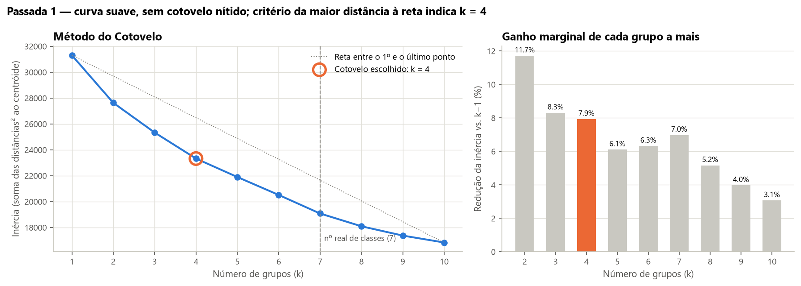
| k | Inércia | Silhueta | Queda vs k−1 (%) | Dist. à reta |
|---|---|---|---|---|
| 1 | 31305 | — | — | 0,000 |
| 2 | 27637 | 0,207 | 11,7 | 0,101 |
| 3 | 25341 | 0,108 | 8,3 | 0,135 |
| 4 | 23330 | 0,121 | 7,9 | 0,154 |
| 5 | 21904 | 0,116 | 6,1 | 0,145 |
| 6 | 20519 | 0,131 | 6,3 | 0,135 |
| 7 | 19087 | 0,148 | 7,0 | 0,126 |
| 8 | 18100 | 0,156 | 5,2 | 0,096 |
| 9 | 17381 | 0,164 | 4,0 | 0,052 |
| 10 | 16846 | 0,150 | 3,1 | 0,000 |
A curva é suave, sem cotovelo nítido — sinal de que os dados não têm grupos bem separados. O critério indica k = 4, estável em 5 sementes; depois dele o ganho marginal cai de ~8% para ~6% por grupo. Sem o k = 1, o critério oscila entre 6 e 7 conforme a semente — mais uma evidência de que não há um k "natural" forte. A silhueta (complementar) fica abaixo de 0,25 em todo k.
| Semente | k (curva 1–10) | k (curva 2–10) |
|---|---|---|
| 0 | 4 | 6 |
| 7 | 4 | 6 |
| 42 | 4 | 7 |
| 123 | 4 | 6 |
| 2026 | 4 | 6 |
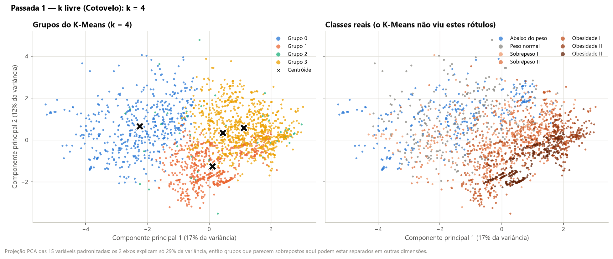
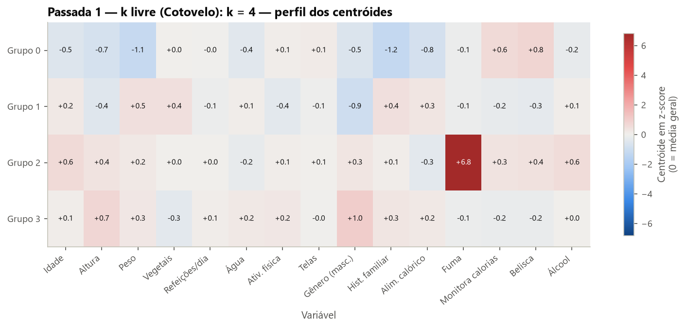
Quem são os 4 grupos: G0 — jovens (21 anos), leves (57 kg), sem histórico familiar → Abaixo do peso/Normal; G1 — mulheres (96%) pesadas (99 kg) → 322 das 324 pessoas com Obesidade III; G2 — os 44 fumantes; G3 — homens (99%) altos e pesados (93 kg) → Obesidade II. O K-Means separou por gênero + peso, não pelos 7 níveis.
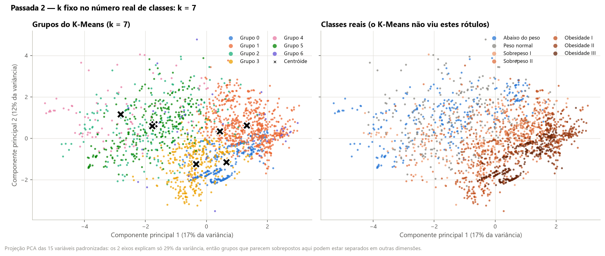
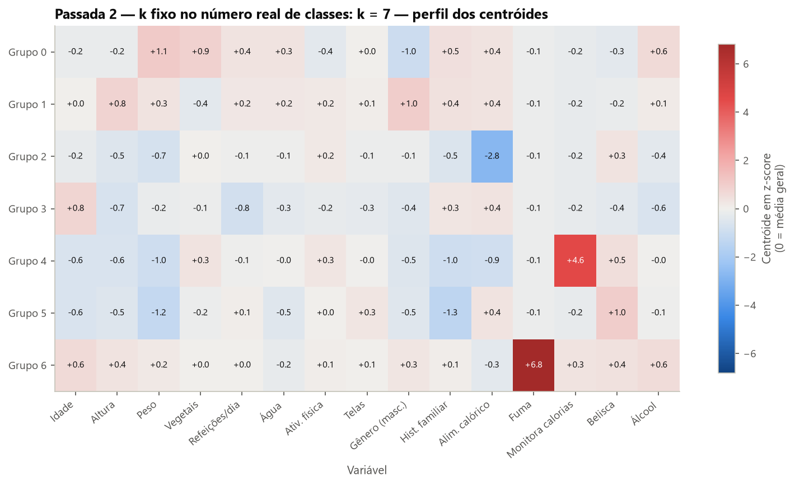
Com 7 grupos surgem perfis mais finos, mas dois grupos são "gastos" com atributos raros: G6 reúne os 44 fumantes (z = +6,8) e G4 quem monitora calorias (z = +4,6). G0 é quase puro: 321 das 367 pessoas são Obesidade III.
Cada grupo recebe o rótulo da classe real majoritária dentro dele. A tabela de contingência (classe real × grupo) é retangular (7 × k); a matriz de confusão (classe real × classe mapeada) é 7 × 7. As métricas foram calculadas diretamente da matriz e conferidas com o scikit-learn: acurácia = diagonal/total; precisão de X = acertos de X / total da coluna X; recall de X = acertos de X / total da linha X. Classe nunca prevista tem precisão 0/0 (indefinida, "—"), contada como 0 na média macro.
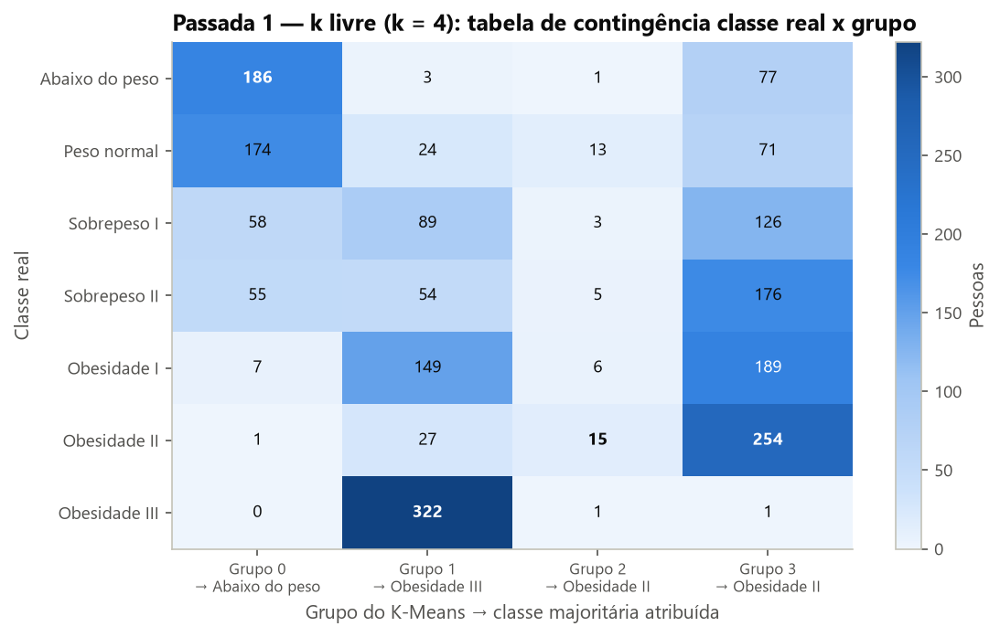
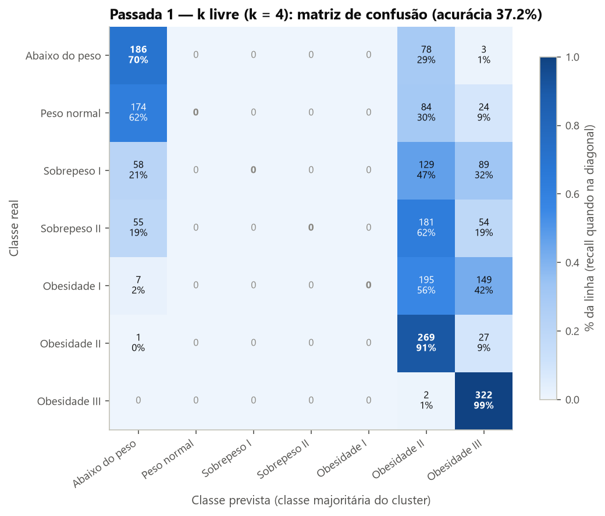
| Classe | Reais | Previstos | Acertos | Precisão | Recall | F1 |
|---|---|---|---|---|---|---|
| Abaixo do peso | 267 | 481 | 186 | 0,39 | 0,70 | 0,50 |
| Peso normal | 282 | 0 | 0 | — | 0,00 | — |
| Sobrepeso I | 276 | 0 | 0 | — | 0,00 | — |
| Sobrepeso II | 290 | 0 | 0 | — | 0,00 | — |
| Obesidade I | 351 | 0 | 0 | — | 0,00 | — |
| Obesidade II | 297 | 938 | 269 | 0,29 | 0,91 | 0,44 |
| Obesidade III | 324 | 668 | 322 | 0,48 | 0,99 | 0,65 |
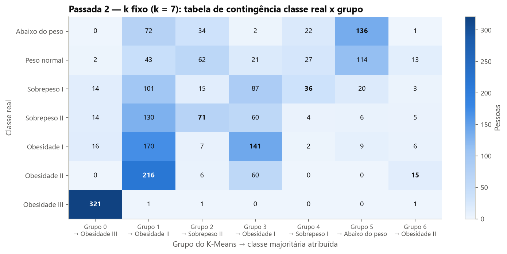
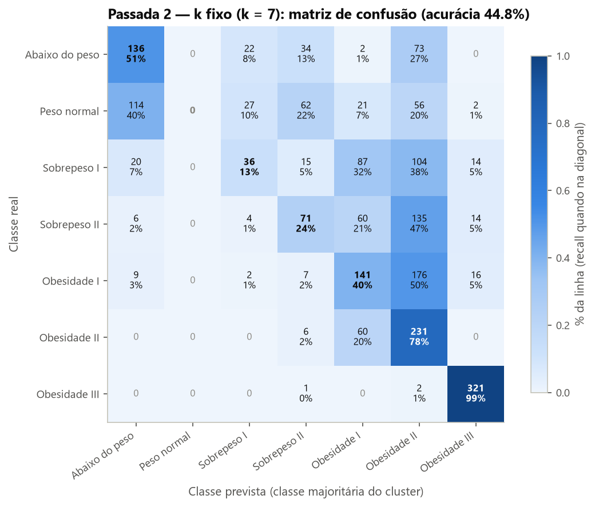
| Classe | Reais | Previstos | Acertos | Precisão | Recall | F1 |
|---|---|---|---|---|---|---|
| Abaixo do peso | 267 | 285 | 136 | 0,48 | 0,51 | 0,49 |
| Peso normal | 282 | 0 | 0 | — | 0,00 | — |
| Sobrepeso I | 276 | 91 | 36 | 0,40 | 0,13 | 0,20 |
| Sobrepeso II | 290 | 196 | 71 | 0,36 | 0,24 | 0,29 |
| Obesidade I | 351 | 371 | 141 | 0,38 | 0,40 | 0,39 |
| Obesidade II | 297 | 777 | 231 | 0,30 | 0,78 | 0,43 |
| Obesidade III | 324 | 367 | 321 | 0,87 | 0,99 | 0,93 |
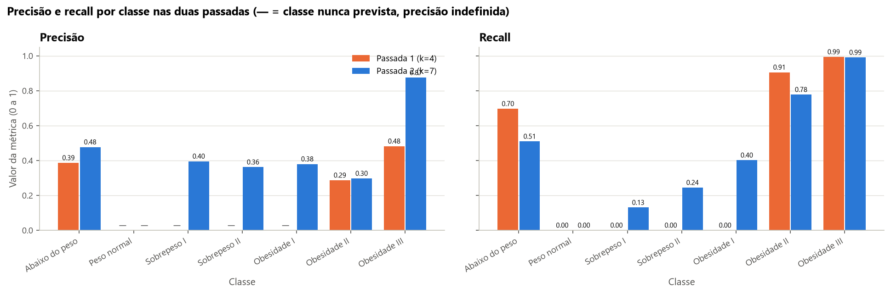
| Passada | k | Acurácia | Precisão macro | Recall macro | ARI | NMI | Classes nunca previstas |
|---|---|---|---|---|---|---|---|
| 1 — k livre (cotovelo) | 4 | 37,2% | 0,165 | 0,371 | 0,183 | 0,271 | Peso normal, Sobrepeso I, Sobrepeso II, Obesidade I |
| 2 — k fixo (nº de classes) | 7 | 44,8% | 0,398 | 0,436 | 0,243 | 0,338 | Peso normal |
Leitura. Passada 1: acurácia 37,2% com 4 classes nunca previstas; só Obesidade III (recall 0,99) e Abaixo do peso (0,70) são bem recuperadas. Passada 2: acurácia 44,8% — 2,7× a linha de base de 16,8% —, 6 classes previstas; Obesidade III com precisão 0,87 e recall 0,99. Peso normal nunca é previsto: essas pessoas se espalham pelos grupos e não são maioria em nenhum. Os erros se concentram em classes vizinhas (Sobrepeso I ↔ II ↔ Obesidade I; Abaixo do peso ↔ Normal), seguindo a ordem do IMC. O ARI (que desconta o acaso) sobe de 0,18 para 0,24: concordância real, mas baixa.
Importante: o K-Means nunca viu os rótulos; a "acurácia" mede a coincidência entre grupos descobertos e classes conhecidas, não um acerto de previsão.
Reavaliamos os mesmos agrupamentos contra versões mais grossas das classes:
| Classes reavaliadas | Nº | Acurácia | ARI | NMI | Linha de base |
|---|---|---|---|---|---|
| 7 classes originais | 7 | 37,2% | 0,183 | 0,271 | 16,8% |
| 6 classes (Sobrepeso I + II) | 6 | 39,5% | 0,185 | 0,285 | 27,1% |
| 4 classes OMS (Abaixo, Normal, Sobrepeso, Obesidade) | 4 | 55,1% | 0,171 | 0,211 | 46,6% |
| 3 classes (Abaixo/Normal, Sobrepeso, Obesidade) | 3 | 63,4% | 0,192 | 0,222 | 46,6% |
| Classes reavaliadas | Nº | Acurácia | ARI | NMI | Linha de base |
|---|---|---|---|---|---|
| 7 classes originais | 7 | 44,8% | 0,243 | 0,338 | 16,8% |
| 6 classes (Sobrepeso I + II) | 6 | 46,8% | 0,235 | 0,344 | 27,1% |
| 4 classes OMS (Abaixo, Normal, Sobrepeso, Obesidade) | 4 | 57,9% | 0,148 | 0,216 | 46,6% |
| 3 classes (Abaixo/Normal, Sobrepeso, Obesidade) | 3 | 64,3% | 0,152 | 0,221 | 46,6% |
| Variáveis usadas (k = 7) | Nº | Acurácia | ARI | Silhueta |
|---|---|---|---|---|
| 15 variáveis (usado) | 15 | 44,8% | 0,243 | 0,148 |
| 15 + MTRANS one-hot (20) | 20 | 40,7% | 0,213 | 0,136 |
| Só hábitos e perfil (sem Altura/Peso) | 13 | 39,4% | 0,181 | 0,147 |
| Só Altura e Peso | 2 | 44,8% | 0,243 | 0,387 |
Só altura e peso dão a mesma acurácia que as 15 variáveis (44,8%) com silhueta 2,6× maior: a classe é o IMC. Só hábitos e perfil ainda acertam 39%, parte por causa do artefato "Obesidade III = mulheres com hábitos idênticos". Incluir MTRANS por one-hot piora (40,7%), confirmando a decisão de excluí-la. (Esta tabela não foi usada para escolher variáveis — isso seria usar a classe para ajustar um método não supervisionado —, apenas para a discussão.)
Dataset: Hotel Booking Demand (Kaggle, jessemostipak; artigo original de Antonio, Almeida & Nunes, 2019,
Data in Brief 22). 119.390 reservas × 32 colunas,
quantitativas e qualitativas, de dois hotéis em Portugal — um hotel urbano (Lisboa) e um resort (Algarve) — com chegadas
de julho de 2015 a agosto de 2017. Tipo de problema: classificação (alvo is_canceled).
Pergunta de pesquisa. Quais características de uma reserva, já conhecidas no momento em que ela é feita, indicam maior risco de cancelamento — e esse risco é previsível o suficiente para orientar a política de reservas do hotel?
Hipótese. Reservas feitas com muita antecedência e sem sinais de compromisso do hóspede (nenhum pedido especial, cliente novo, sem relação prévia com o hotel) cancelam bem mais do que a média.
Público-alvo. Gestão dos dois hotéis — gerente geral e gerente de receitas/reservas (revenue manager). São pessoas de negócio, não técnicas: querem saber ONDE está o risco e O QUE FAZER (política de depósito, overbooking, contato de confirmação). Por isso as visualizações explanatórias usam poucos elementos, uma cor de destaque, números escritos no próprio gráfico e títulos que já dizem a conclusão.
| Coluna | Descrição | Tipo | Únicos | NaN |
|---|---|---|---|---|
| hotel | Hotel | Qualitativa nominal | 2 | 0 |
| is_canceled | Cancelada (0/1) | Qualitativa binária (ALVO) | 2 | 0 |
| lead_time | Antecedência (dias) | Quantitativa discreta | 479 | 0 |
| arrival_date_year | Ano de chegada | Quantitativa discreta (tempo) | 3 | 0 |
| arrival_date_month | Mês de chegada | Qualitativa ordinal (tempo) | 12 | 0 |
| arrival_date_week_number | Semana do ano | Quantitativa discreta (tempo) | 53 | 0 |
| arrival_date_day_of_month | Dia do mês | Quantitativa discreta (tempo) | 31 | 0 |
| stays_in_weekend_nights | Noites de fim de semana | Quantitativa discreta | 17 | 0 |
| stays_in_week_nights | Noites de semana | Quantitativa discreta | 35 | 0 |
| adults | Adultos | Quantitativa discreta | 14 | 0 |
| children | Crianças | Quantitativa discreta | 5 | 4 |
| babies | Bebês | Quantitativa discreta | 5 | 0 |
| meal | Regime de refeição | Qualitativa nominal | 5 | 0 |
| country | País de origem | Qualitativa nominal (177 países) | 177 | 488 |
| market_segment | Segmento de mercado | Qualitativa nominal | 8 | 0 |
| distribution_channel | Canal de distribuição | Qualitativa nominal | 5 | 0 |
| is_repeated_guest | Hóspede recorrente (0/1) | Qualitativa binária | 2 | 0 |
| previous_cancellations | Cancelamentos anteriores | Quantitativa discreta | 15 | 0 |
| previous_bookings_not_canceled | Reservas anteriores não canceladas | Quantitativa discreta | 73 | 0 |
| reserved_room_type | Tipo de quarto reservado | Qualitativa nominal (código) | 10 | 0 |
| assigned_room_type | Tipo de quarto atribuído | Qualitativa nominal (código) | 12 | 0 |
| booking_changes | Alterações na reserva | Quantitativa discreta | 21 | 0 |
| deposit_type | Tipo de depósito | Qualitativa nominal | 3 | 0 |
| agent | ID do agente | Qualitativa nominal (ID) | 333 | 16340 |
| company | ID da empresa | Qualitativa nominal (ID) | 352 | 112593 |
| days_in_waiting_list | Dias em lista de espera | Quantitativa discreta | 128 | 0 |
| customer_type | Tipo de cliente | Qualitativa nominal | 4 | 0 |
| adr | Diária média - ADR (€) | Quantitativa contínua (€) | 8879 | 0 |
| required_car_parking_spaces | Vagas de estacionamento | Quantitativa discreta | 5 | 0 |
| total_of_special_requests | Pedidos especiais | Quantitativa discreta | 6 | 0 |
| reservation_status | Status final | Qualitativa nominal (vazamento) | 3 | 0 |
| reservation_status_date | Data do status | Data (vazamento) | 926 | 0 |
Há 16 variáveis quantitativas, 15 qualitativas e 1 data. reservation_status e
reservation_status_date registram o desfecho (vazamento do alvo) e não entram em análises de causa nem no modelo.
Os nomes originais das colunas foram mantidos; os valores foram traduzidos para português e as variáveis derivadas
(total de noites, de hóspedes, faixa de antecedência, receita estimada etc.) têm nomes em português sem acentos.
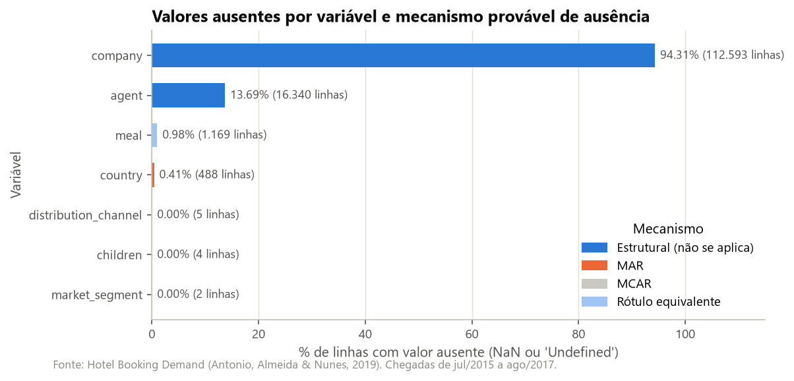
O que mostra. Percentual de linhas com valor ausente (NaN ou o rótulo 'Undefined') em cada variável, colorido pelo mecanismo de ausência que diagnosticamos.
Insight. Os dois maiores 'buracos' (company 94%, agent 14%) não são falhas: são ausências ESTRUTURAIS — reservas sem empresa ou sem agente. Viraram as variáveis tem_empresa e tem_agente, que inclusive ajudam a explicar o cancelamento (17,5% com empresa vs. 38,2% sem). country (0,4%) é MAR: concentrado no resort e em reservas corporativas/diretas que quase não cancelam (13,7%) — remover essas linhas enviesaria a base.
Por que este gráfico. Barras horizontais ordenadas permitem comparar magnitudes muito diferentes (94% a 0,002%) com os nomes das variáveis legíveis; a cor codifica a categoria do mecanismo, não uma quantidade.
| Coluna | NaN | 'Undefined' | Total | % linhas |
|---|---|---|---|---|
| company | 112593 | 0 | 112593 | 94,307% |
| agent | 16340 | 0 | 16340 | 13,686% |
| meal | 0 | 1169 | 1169 | 0,979% |
| country | 488 | 0 | 488 | 0,409% |
| distribution_channel | 0 | 5 | 5 | 0,004% |
| children | 4 | 0 | 4 | 0,003% |
| market_segment | 0 | 2 | 2 | 0,002% |
Para diagnosticar o mecanismo, comparamos as reservas com e sem o valor ausente em variáveis observadas (hotel, segmento, taxa de cancelamento). Nenhum dado faltante foi simplesmente removido:
tem_empresa e tem_agente. A ausência é informativa: 17,5% de
cancelamento com empresa vs. 38,2% sem; 24,7% sem agente vs. 39,0% com.| Etapa | Colunas | Linhas | Tratamento |
|---|---|---|---|
| Linhas repetidas | todas | 31.994 | Mantidas (cada linha é um quarto reservado, o que importa para a ocupação). Marcadas na coluna 'duplicada' para análise de sensibilidade no dashboard. |
| Faltante | children | 4 | Imputado com a moda (0 crianças, 93% das reservas). |
| Faltante | country | 488 | Mantido como categoria própria 'Desconhecido'. |
| Faltante estrutural | agent | 16.340 | Criada a variável 'tem_agente' (0/1); ID ausente recodificado como 0 = 'sem agente'. |
| Faltante estrutural | company | 112.593 | Criada 'tem_empresa' (0/1). O ID (mais de 300 valores, 94% vazio) não é usado nas análises. |
| Faltante implícito | meal | 1.169 | 'Undefined' unificado com 'SC' (Sem refeição). |
| Faltante implícito | market_segment, distribution_channel | 7 | Segmento imputado pela moda do hotel urbano (Agência online); canal deduzido do segmento (ex.: Agência online -> Agência/operadora). |
| Inconsistência | adults, children, babies | 180 | Linhas removidas. |
| Outlier / erro | adr | 2 | Valor substituído pela mediana do mesmo hotel, mês e tipo de quarto. A reserva é mantida. |
| Outlier / erro | children, babies | 3 | Substituído pela moda (0). |
| Outlier mantido | lead_time, adr, adults, days_in_waiting_list, stays | 0 | Mantidos. Nos gráficos usamos faixas (antecedência) e medianas/quartis, que são robustos a valores extremos. |
Linhas repetidas (26,8%). Não há número de reserva no dataset; linhas idênticas são, em sua maioria, quartos de uma mesma reserva de grupo (98% das reservas "Não reembolsáveis" se repetem). Como cada linha é um quarto — o que importa para a ocupação —, mantivemos as linhas e fizemos uma análise de sensibilidade (também disponível no dashboard):
| Base | Reservas | Taxa geral | 0–7 dias | > 1 ano | Sem pedido esp. | Com pedido esp. | Não reembolsável |
|---|---|---|---|---|---|---|---|
| Com repetidas (base usada) | 119.210 | 37,1% | 9,6% | 67,7% | 47,8% | 21,8% | 99,4% |
| Sem repetidas | 87.230 | 27,5% | 8,4% | 40,8% | 33,3% | 21,7% | 94,7% |
Sem as repetidas a taxa geral cai de 37% para 28%, mas todas as conclusões se mantêm: o cancelamento cresce com a antecedência e quem faz pedido especial cancela menos.
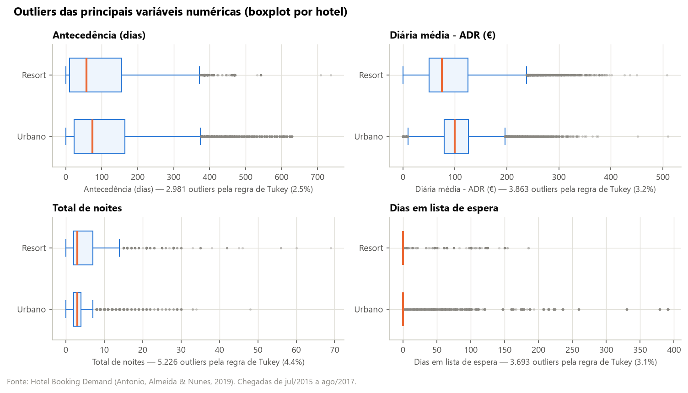
O que mostra. Boxplots por hotel das principais variáveis numéricas; pontos além dos bigodes estão fora de 1,5×IQR (regra de Tukey).
Insight. Há valores extremos plausíveis (antecedência de até 737 dias, diárias de até 510 €, estadias de 69 noites) que foram mantidos, e erros evidentes (diária de 5.400 € e de −6,38 €; 10 bebês com 2 adultos) que foram corrigidos. Em variáveis discretas com IQR = 0 (adultos, alterações) a regra de Tukey marca até 25% das linhas — ela não serve para essas variáveis.
Por que este gráfico. O boxplot é o gráfico padrão para outliers: mostra mediana, quartis e pontos extremos de uma vez, e colocar os dois hotéis lado a lado evita confundir diferenças entre hotéis com valores atípicos.
| Variável | q1 | q3 | Lim. sup. (Tukey) | Máximo | Outliers | % |
|---|---|---|---|---|---|---|
| lead_time | 18,0 | 161,0 | 375,5 | 737,0 | 2.981 | 2,5% |
| adr | 69,5 | 126,0 | 210,8 | 510,0 | 3.863 | 3,2% |
| noites_total | 2,0 | 4,0 | 7,0 | 69,0 | 5.226 | 4,4% |
| adults | 2,0 | 2,0 | 2,0 | 55,0 | 29.530 | 24,8% |
| children | 0,0 | 0,0 | 0,0 | 3,0 | 8.589 | 7,2% |
| babies | 0,0 | 0,0 | 0,0 | 2,0 | 915 | 0,8% |
| days_in_waiting_list | 0,0 | 0,0 | 0,0 | 391,0 | 3.693 | 3,1% |
| previous_cancellations | 0,0 | 0,0 | 0,0 | 26,0 | 6.479 | 5,4% |
| booking_changes | 0,0 | 0,0 | 0,0 | 18,0 | 17.978 | 15,1% |
| total_of_special_requests | 0,0 | 1,0 | 2,5 | 5,0 | 2.874 | 2,4% |
As seis visualizações a seguir cobrem os pilares distribucional e relacional, sempre em relação ao alvo. No dashboard elas respondem a filtros (hotel, ano, meses, segmento, tipo de cliente e remoção das linhas repetidas).
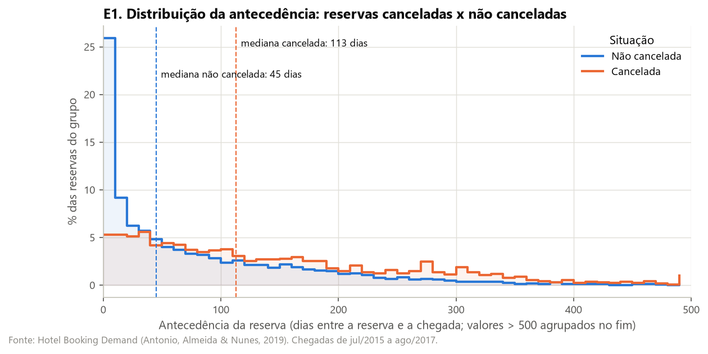
O que mostra. Distribuição (em % de cada grupo) dos dias entre a reserva e a chegada, separando reservas canceladas e não canceladas. Linhas tracejadas = medianas.
Insight. As reservas não canceladas se concentram nos primeiros dias (26% com até 10 dias de antecedência). As canceladas se espalham por prazos longos: mediana de 113 dias contra 45. A partir de ~40 dias a curva laranja fica sempre acima da azul — antecedência longa é um sinal de risco.
Por que este gráfico. Histograma em degraus (step) normalizado por grupo: compara a FORMA de duas distribuições de tamanhos diferentes (75 mil x 44 mil) sem que uma barra esconda a outra, como aconteceria com barras sobrepostas.
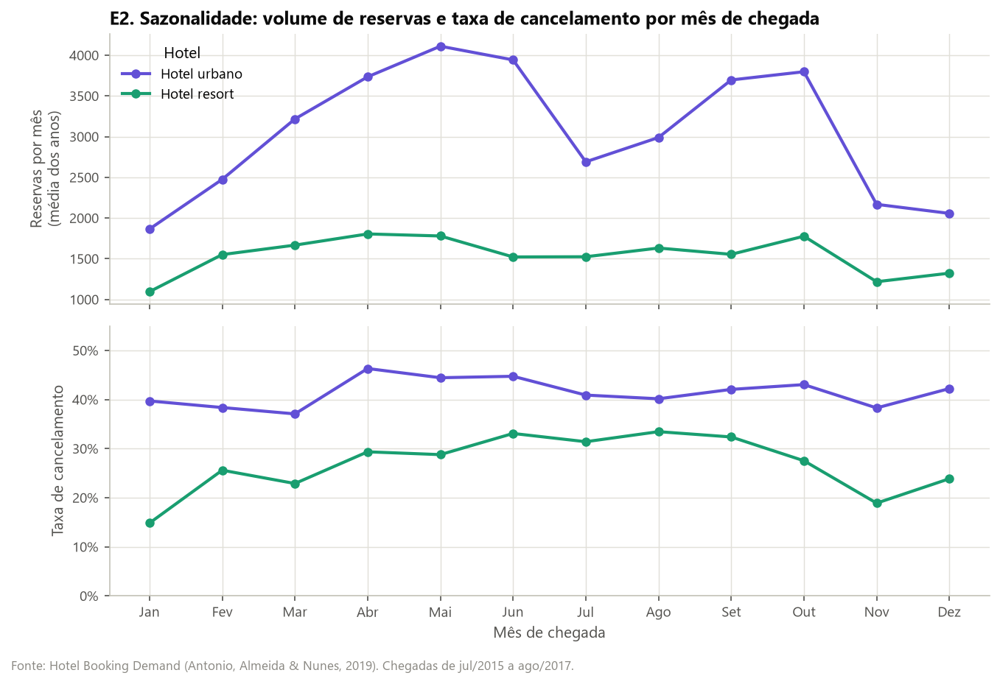
O que mostra. Painel de cima: reservas por mês de chegada (média dos anos disponíveis). Painel de baixo: taxa de cancelamento no mesmo mês. Uma linha por hotel.
Insight. O hotel urbano tem mais volume e cancela mais em todos os meses (42% vs. 28% no ano). O resort tem a taxa mais sazonal: 15% em janeiro e ~33% no verão (jun–set), quando a demanda é maior e o hóspede 'segura' a vaga com antecedência. No urbano o pico de cancelamento é na primavera (abr–jun, ~45%).
Por que este gráfico. Linhas são a forma natural para tempo. Volume e taxa têm escalas diferentes, então usamos DOIS painéis com o mesmo eixo X em vez de um gráfico com dois eixos Y (que induz comparações falsas).
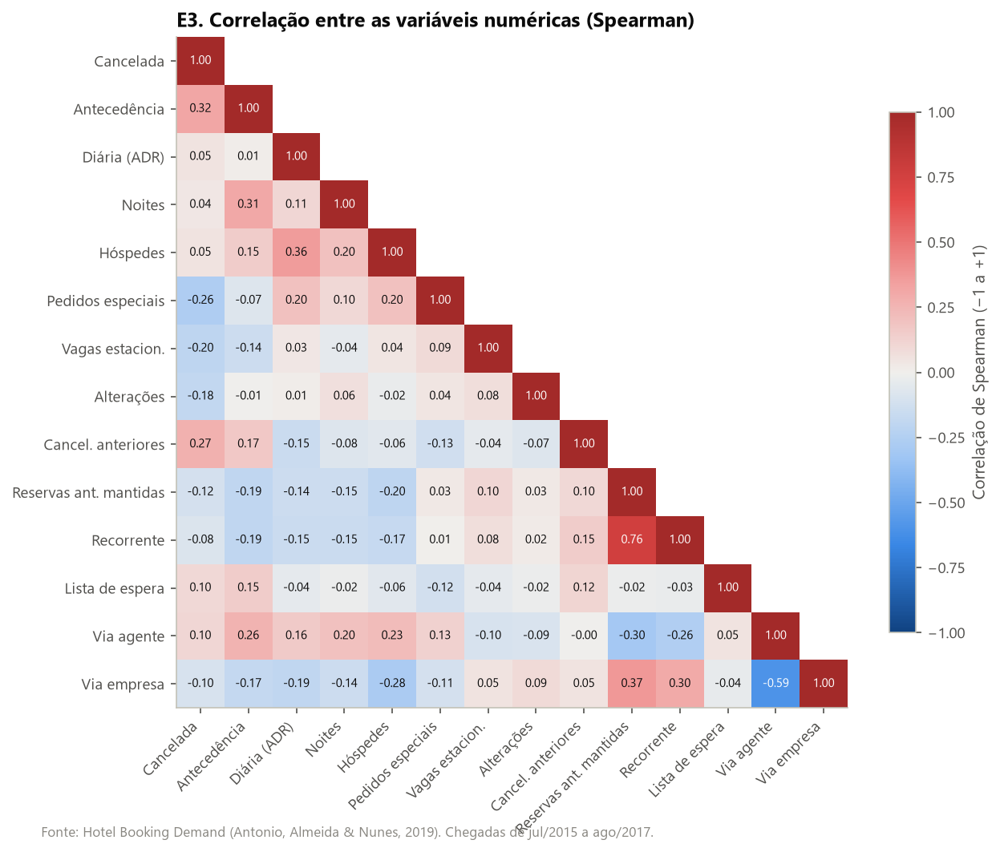
O que mostra. Matriz de correlação de Spearman entre as variáveis numéricas e o alvo (Cancelada = 1). Vermelho = correlação positiva, azul = negativa, cinza = nenhuma.
Insight. Com o cancelamento: antecedência (+0,32) e cancelamentos anteriores (+0,27) aumentam o risco; pedidos especiais (−0,26), vaga de estacionamento (−0,20) e alterações na reserva (−0,18) diminuem. Entre as explicativas: reservas anteriores mantidas e hóspede recorrente andam juntas (+0,76); via agente e via empresa são quase excludentes (−0,59). Nenhuma correlação isolada é forte: o risco é multivariado.
Por que este gráfico. Heatmap triangular com escala divergente centrada em zero mostra todas as relações de uma vez sem repetição; Spearman porque as variáveis são contagens assimétricas e as relações não são lineares.
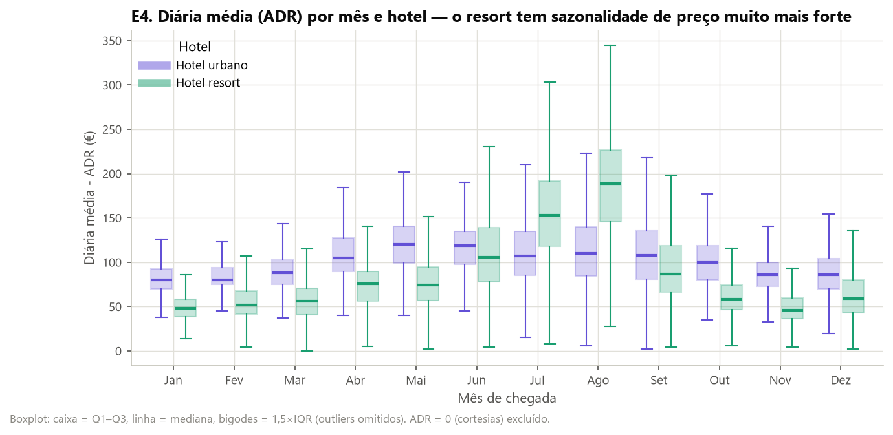
O que mostra. Boxplots da diária média (€) por mês de chegada, um para cada hotel (cortesias com ADR = 0 excluídas).
Insight. O resort tem preço fortemente sazonal: mediana de ~48 € em janeiro e ~188 € em agosto. O hotel urbano é estável (80–120 €). A dispersão também cresce no verão do resort — época em que a receita perdida com cada cancelamento é muito maior.
Por que este gráfico. Boxplot resume a distribuição (mediana, quartis, amplitude) de milhares de diárias por mês e permite comparar 24 grupos lado a lado; cores fixas por hotel mantêm a leitura consistente com E2.
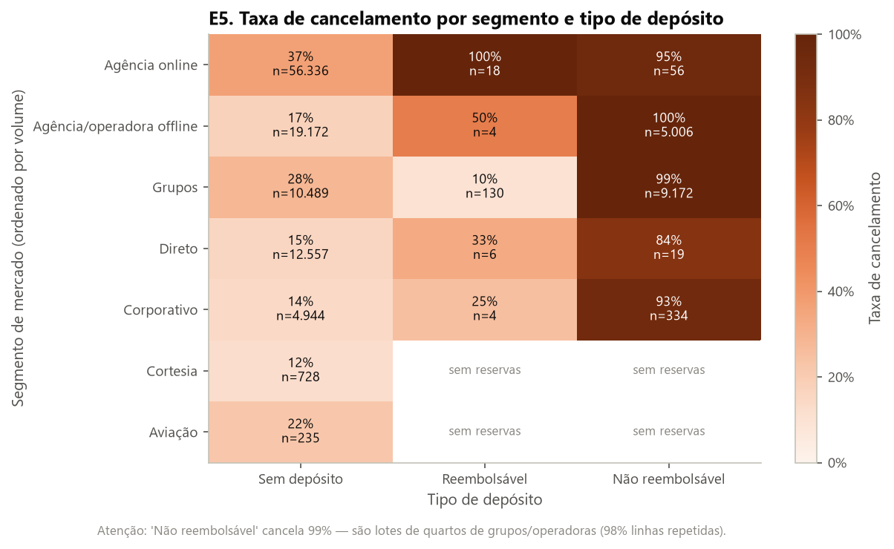
O que mostra. Taxa de cancelamento em cada combinação de segmento de mercado e tipo de depósito; o número de reservas (n) está em cada célula.
Insight. Paradoxo: reservas 'Não reembolsáveis' cancelam 99%. Não é o hóspede pagando para cancelar — são lotes de quartos de Grupos e Operadoras offline (98% são linhas repetidas, quase todos de Portugal, sem nenhum pedido especial) liberados em bloco. Sem depósito, o maior risco é a Agência online (37%) e o menor, Direto/Corporativo (14–15%). Células com n pequeno (ex.: Reembolsável) não devem ser lidas como tendência.
Por que este gráfico. Heatmap é a forma adequada para uma métrica em duas dimensões categóricas; a rampa de uma só cor (laranja = cancelamento) vai de 'pouco' a 'muito' sem sugerir sinal, e o n escrito evita superinterpretar células pequenas.
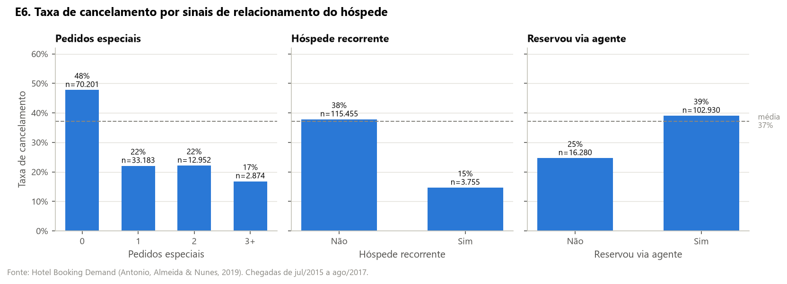
O que mostra. Taxa de cancelamento por número de pedidos especiais, por hóspede recorrente e por reserva via agente; a linha tracejada é a média geral.
Insight. Qualquer pedido especial derruba o cancelamento de 48% para 22% (e 17% com 3 ou mais). Hóspedes recorrentes cancelam 15% contra 38%. Reservas via agente cancelam mais (39% vs. 25%). Todos apontam na mesma direção: quanto mais vínculo/planejamento, menor o risco.
Por que este gráfico. Barras verticais comparam taxas entre poucas categorias; a mesma escala Y nos três painéis e a linha de média permitem ver rapidamente o que fica acima ou abaixo do normal.
Público-alvo. Gestão dos dois hotéis — gerente geral e gerente de receitas/reservas (revenue manager). São pessoas de negócio, não técnicas: querem saber ONDE está o risco e O QUE FAZER (política de depósito, overbooking, contato de confirmação). Por isso as visualizações explanatórias usam poucos elementos, uma cor de destaque, números escritos no próprio gráfico e títulos que já dizem a conclusão.
A distribuição da antecedência (E1) mostrou que reservas canceladas são feitas muito antes (mediana de 113 dias contra 45). A correlação (E3) confirmou a antecedência como a variável numérica mais associada ao cancelamento (ρ = +0,32) e os pedidos especiais como o principal fator de proteção (ρ = −0,26). Os sinais de relacionamento (E6) mostraram que quem faz pedido especial cancela menos da metade (22% contra 48%).
Os dois fatores se somam: em TODA faixa de antecedência, quem fez ao menos um pedido especial cancela cerca de metade (ou menos) do que quem não fez. Uma reserva longa e 'fria' (sem pedidos) é o perfil típico de cancelamento: reserva especulativa, feita para garantir preço/data, que é abandonada depois.
Gestores não controlam a sazonalidade nem o país do hóspede, mas controlam a POLÍTICA de reservas: exigir depósito ou confirmação para reservas longas, calibrar overbooking por perfil e contatar hóspedes sem pedidos especiais. Antecedência e pedidos especiais são conhecidos no ato da reserva — dá para agir antes do prejuízo. Achados como 'Não reembolsável cancela 99%' foram deixados na exploração: são contraintuitivos, vêm de lotes de grupos (linhas repetidas) e confundiriam a mensagem principal.
COR: um único laranja (a cor de 'cancelamento' em todo o projeto) marca o que importa — as faixas acima da média (X1), a linha 'nenhum pedido especial' (X2) e o perfil de risco (X3); todo o resto fica em cinza. TAMANHO/PESO: a linha de risco é mais grossa e os percentuais-chave estão em negrito e maiores. POSIÇÃO: barras ordenadas pela antecedência (ordem natural, da esquerda para a direita) e o perfil de risco sempre na primeira posição, à esquerda. TEXTO: o título de cada gráfico é a própria conclusão e uma linha de referência marca a média geral.
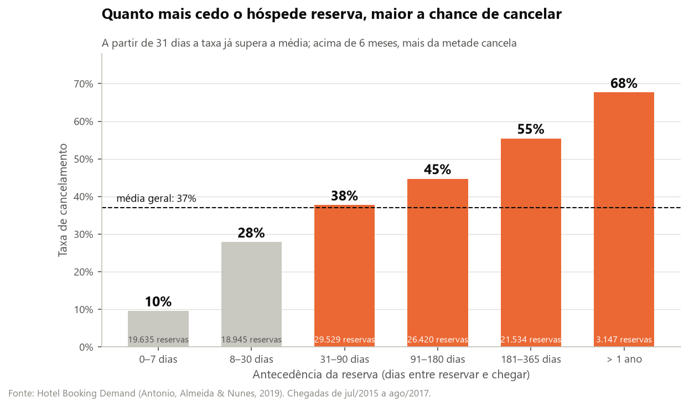
O que mostra. Taxa de cancelamento por faixa de antecedência. Laranja = faixas acima da média geral (37%); cinza = abaixo. RESPONDE DIRETAMENTE À PERGUNTA DE PESQUISA.
Insight. O risco cresce de forma contínua com a antecedência: 10% (até 7 dias) → 28% → 38% → 45% → 55% → 68% (mais de 1 ano). Reservas com mais de 30 dias já ficam acima da média; acima de 6 meses, mais da metade é cancelada. O padrão se mantém em cada hotel e também removendo as linhas repetidas.
Por que este gráfico. Barras ordenadas pela ordem natural da antecedência, com UMA cor de destaque e o resto em cinza: o gestor vê a escada sem precisar ler o eixo. Os percentuais escritos nas barras dispensam consulta à escala e a linha da média dá a referência.
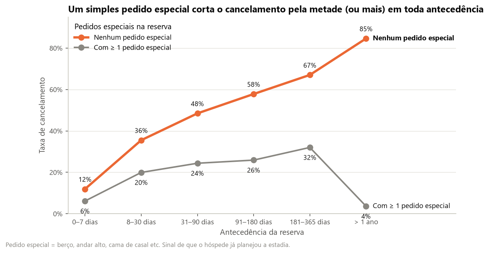
O que mostra. Taxa de cancelamento por faixa de antecedência, separando reservas sem nenhum pedido especial (laranja, linha grossa) e com pelo menos um (cinza).
Insight. Em todas as faixas, quem fez pedido especial cancela metade ou menos: 36% → 20% (8–30 dias), 58% → 26% (91–180 dias), 67% → 32% (181–365 dias). O pior cenário é antecedência longa SEM pedido (85% acima de 1 ano). Os dois fatores da hipótese se somam.
Por que este gráfico. Duas linhas no mesmo eixo mostram ao mesmo tempo o efeito da antecedência (inclinação) e o do pedido especial (distância entre as linhas). Rótulos diretos no fim das linhas substituem a legenda e o contraste cor/espessura dirige o olhar para a linha de risco.
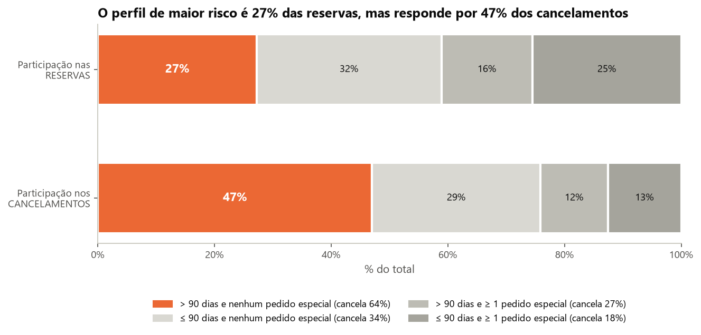
O que mostra. Participação de cada perfil (antecedência > ou ≤ 90 dias × com/sem pedido especial) no total de reservas (barra de cima) e no total de cancelamentos (barra de baixo).
Insight. O perfil 'mais de 90 dias e nenhum pedido especial' é só 27% das reservas, mas responde por 47% dos cancelamentos (64% delas são canceladas). É ali que uma política de depósito/confirmação tem mais retorno: atinge pouco mais de 1/4 dos hóspedes e quase metade do problema.
Por que este gráfico. Barras 100% empilhadas lado a lado comparam composição (parte do todo) entre duas bases; o segmento de risco vem primeiro, em laranja, alinhado à esquerda para que a diferença de comprimento salte aos olhos. Usamos barras e não pizza porque comprimentos alinhados são comparados com muito mais precisão do que ângulos.
| Perfil | Reservas | Canceladas | Taxa | % das reservas | % dos cancelamentos |
|---|---|---|---|---|---|
| > 90 dias e nenhum pedido especial | 32.486 | 20.779 | 64,0% | 27,3% | 47,0% |
| ≤ 90 dias e nenhum pedido especial | 37.715 | 12.755 | 33,8% | 31,6% | 28,9% |
| > 90 dias e ≥ 1 pedido especial | 18.615 | 5.111 | 27,5% | 15,6% | 11,6% |
| ≤ 90 dias e ≥ 1 pedido especial | 30.394 | 5.554 | 18,3% | 25,5% | 12,6% |
Para responder à segunda parte da pergunta, treinamos um HistGradientBoostingClassifier (scikit-learn) usando
apenas informações conhecidas no momento da reserva. Excluímos: reservation_status(_date) (desfecho),
assigned_room_type (definido no check-in), booking_changes (posterior à reserva),
required_car_parking_spaces (0% de cancelamento entre quem pediu vaga — indício de registro na chegada),
ano e IDs de agente/empresa. A divisão é temporal: treino com chegadas até dez/2016 (78.590
reservas) e teste com 2017 (40.620), o que simula o uso real e evita que quartos repetidos de um mesmo
grupo caiam no treino e no teste.
| AUC | Acurácia | Acurácia "nunca cancela" | Precisão | Recall | F1 |
|---|---|---|---|---|---|
| 0,84 | 77,4% | 61,3% | 78,7% | 57,0% | 0,66 |
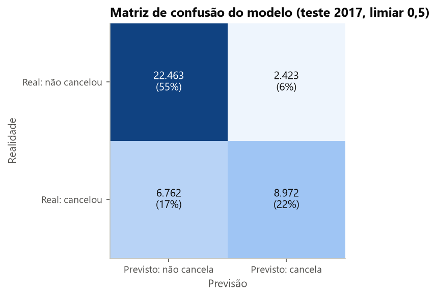
O que mostra. Curva ROC e matriz de confusão do classificador, treinado com chegadas até 2016 e testado em 2017.
Insight. AUC de 0,84: o modelo ordena bem o risco. Com limiar 0,5 acerta 77% (contra 61% de 'nunca cancela'), com precisão de 79% — quando aponta risco, geralmente acerta — mas recall de 57%: parte dos cancelamentos não é previsível só com os dados da reserva. Resposta à 2ª parte da pergunta: o risco é parcialmente previsível, suficiente para PRIORIZAR ações, não para decidir reserva a reserva.
Por que este gráfico. A ROC mostra o equilíbrio entre acertos e alarmes falsos em todos os limiares; a matriz de confusão mostra, em contagens absolutas, os dois tipos de erro no limiar escolhido.
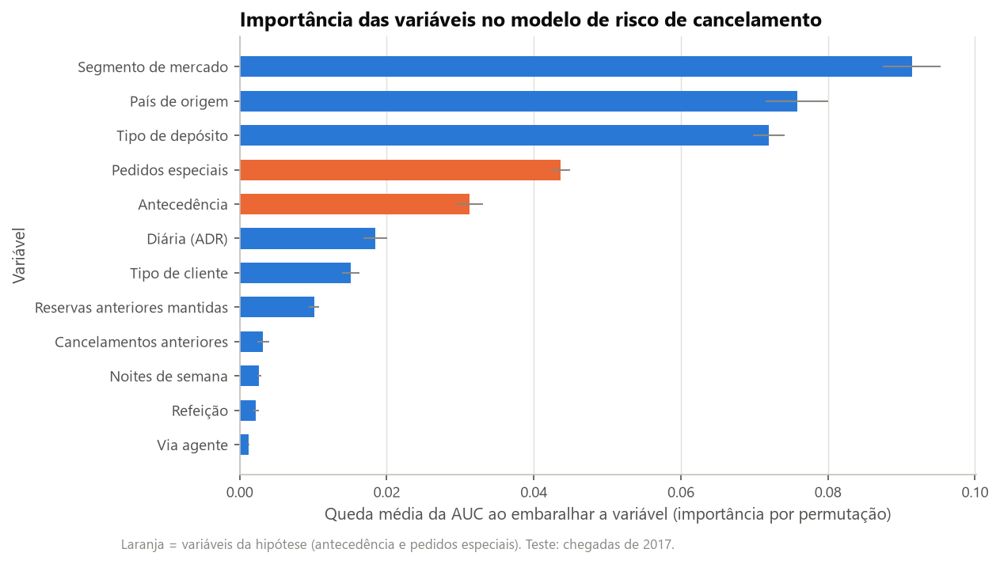
O que mostra. Quanto a qualidade do modelo (AUC) cai quando os valores de cada variável são embaralhados no conjunto de teste (importância por permutação).
Insight. Segmento de mercado, país de origem e tipo de depósito lideram (capturam os lotes de grupos e as reservas domésticas, que cancelam 57%); logo depois vêm pedidos especiais e antecedência — as duas variáveis da hipótese, confirmadas mesmo controlando por todas as outras.
Por que este gráfico. Barras horizontais ordenadas são a forma mais legível para ranking com nomes longos; a barra de erro mostra a variação entre as repetições da permutação.
Execução: streamlit run src/parte_especifica/dashboard.py. O dashboard tem 7 páginas em duas seções:
| Página | Conteúdo |
|---|---|
| Visão geral | Pergunta, hipótese, público-alvo, grande ideia, KPIs e guia de navegação |
| História: o que fazer | As 3 explanatórias com notas, recomendações, raciocínio do storytelling e comparação lado a lado com/sem linhas repetidas |
| Exploração | As 6 exploratórias com notas analíticas, organizadas em seções |
| Explorador de variáveis | Escolha livre de X e Y: gráfico e medida de associação (Spearman, η², V de Cramér) se adaptam aos tipos — útil para interpretar ao vivo qualquer par de variáveis |
| Simulador de risco | Desempenho do modelo (ROC, matriz de confusão, importâncias) e simulação do risco de uma reserva hipotética, com curva de risco × antecedência |
| Qualidade dos dados | Estrutura, faltantes e evidências do mecanismo, outliers por variável, linhas repetidas e log de tratamentos |
| K-Means: duas passadas (Parte Comum) | Cotovelo, animação dos agrupamentos de k = 2 a 10, acurácia/ARI por k, Passada 1 × Passada 2 lado a lado, contingência, matrizes, métricas e discussão crítica |
Recursos de interatividade (bônus Visual/UX): filtros globais interligados na barra lateral (hotel, ano, meses, segmento e tipo de cliente com contagens que se atualizam conforme os demais filtros; os filtros persistem entre páginas); botão de análise de sensibilidade (remover linhas repetidas); seleção interativa de variáveis/eixos; comparação lado a lado; animação de transição entre valores de k do K-Means; página dedicada à Parte Comum; simulador com o modelo; e exportação dos dados filtrados (CSV) e de um relatório HTML da seleção atual, com gráficos interativos e notas.
Boas práticas visuais aplicadas: paleta com significado fixo em todo o projeto (azul = não cancelada, laranja = cancelamento/risco, cinza = contexto; violeta/verde para os hotéis), checada para daltonismo; um único eixo Y por gráfico (volume e taxa em painéis separados); títulos que dizem a conclusão nas explanatórias; rótulos diretos; nenhum gráfico de pizza ou radar; dados pré-agregados para manter o dashboard rápido.
docs/DECLARACAO_IA.pdf, assinada por todos os integrantes.